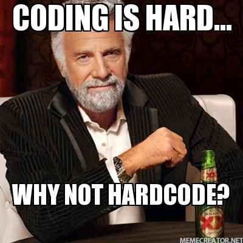

Django Quiz 3!!
December 17th 2018
Get into teams!

Quiz Begin!

Part 1: Trivia

1. What does DSF stand for?
- Django Sans Forms
- Django Server Forgery
- Django Software Foundation
- Database Sequence File
2. Which two of the following are Django fellows?
One point each.
- Django Freeman
- Grace Hopper
- Carlton Gibson
- Donald Knuth
- Rick Sanchez
- Tim Graham
3. Which City was Djangocon 2018 (US) in?
4. Which City was Djangocon EU 2018 in?
One point for city, one point for country.
5. Name the official Django mailing lists
One point each.
- django-announce
- django-core-mentorship
- django-developers
- django-i18n
- django-updates
- django-users
End of Part 1

Part 2: Coding in Django
6. What does CSRF stand for?
- Cross Side Request Forms
- Cranky Server Rack Fire
- Crispy Sizzly Relished Forms
- Cross Site Request Forgery
7. What does ORM stand for?
- Online Realtime Magic
- Object-Relational Mapper
- Objection Relationship Manager
- Ouch Random Methods
8. What does CBV stand for?
- Classist Biased Views
- Classy Blinged View
- Class Based View
- Classic Basic View
9. Which of these is true about CommonMiddleware?
- It was deprecated and will be removed in Django 2.2
- It whitelists user agents
- It sets the
Content-Lengthheader - It handles the database connection
10. What is the Django helper for creating a database transaction or savepoint?
One point for its name, one point for full import path.
11. What is the most recent version of Django?
One point for major + minor numbers, one point for patch number.
12. What is the most recent version of Python?
One point for major + minor numbers, one point for patch number.
End of Part 2

Swap for marking!

Part 1 Answers
1. What does DSF stand for?
- Django Sans Forms
- Django Server Forgery
- Django Software Foundation
- Database Sequence File
2. Which two of the following are Django fellows?
One point each.
- Django Freeman
- Grace Hopper
- Carlton Gibson
- Donald Knuth
- Rick Sanchez
- Tim Graham
3. Which City was Djangocon 2018 (US) in?
San Diego
4. Which City was Djangocon EU 2018 in?
One point for city, one point for country.
Heidelberg, Germany 🇩🇪
5. Name the official Django mailing lists
One point each.
- django-announce
- django-core-mentorship
- django-developers
- django-i18n
- django-updates
- django-users
Part 2 Answers
6. What does CSRF stand for?
- Cross Side Request Forms
- Cranky Server Rack Fire
- Crispy Sizzly Relished Forms
- Cross Site Request Forgery
7. What does ORM stand for?
- Online Realtime Magic
- Object-Relational Mapper
- Objection Relationship Manager
- Ouch Random Methods
8. What does CBV stand for?
- Classist Biased Views
- Classy Blinged View
- Class Based View
- Classic Basic View
9. Which of these is true about CommonMiddleware?
- It was deprecated and will be removed in Django 2.2
- It whitelists user agents
- It sets the
Content-Lengthheader - It handles the database connection
10. What is the Django helper for creating a database transaction or savepoint?
One point for its name, one point for full import path.
django.db.transaction.atomic
11. What is the most recent version of Django?
One point for major + minor numbers, one point for patch number.
2.1.4
12. What is the most recent version of Python?
One point for major + minor numbers, one point for patch number.
3.7.1
Total and unswap!